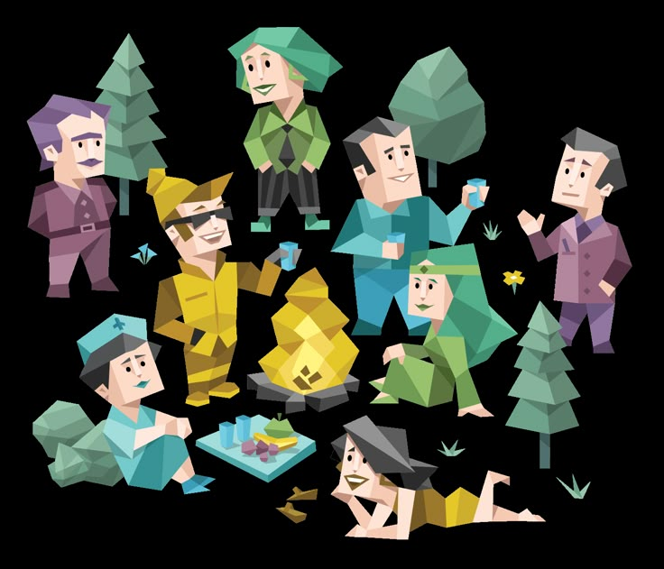

Universitas Sam Ratulangi (UNSRAT) merupakan salah satu perguruan tinggi negeri terkemuka di Indonesia Timur yang berlokasi di Kota Manado, Sulawesi Utara. Didirikan pada 14 September 1965, universitas ini telah memainkan peran penting dalam pengembangan sumber daya manusia dan kemajuan pembangunan di kawasan Indonesia bagian timur, khususnya di Provinsi Sulawesi Utara.
Cikal bakal Universitas Sam Ratulangi dimulai jauh sebelum mendapatkan status sebagai universitas negeri. Pada awalnya, di Manado telah berdiri beberapa perguruan tinggi swasta seperti Fakultas Ekonomi cabang dari Universitas Hasanuddin Makassar, Perguruan Tinggi Pendidikan Guru (PTPG), dan Fakultas Hukum dan Pengetahuan Masyarakat yang didirikan oleh Yayasan Perguruan Tinggi Manado.
Pada tahun 1961, perguruan-perguruan tinggi tersebut digabung menjadi Universitas Sulawesi Utara-Tengah (UNSUT). Kemudian pada 14 September 1965, melalui Keputusan Presiden RI No. 277 Tahun 1965, UNSUT diresmikan menjadi universitas negeri dengan nama Universitas Sam Ratulangi, mengambil nama dari tokoh nasional asal Sulawesi Utara, Prof. Dr. Sam Ratulangi.
Sam Ratulangi sendiri adalah seorang pahlawan nasional, intelektual, politikus, dan jurnalis yang berjuang untuk kemerdekaan Indonesia. Penggunaan namanya sebagai identitas universitas mencerminkan semangat nasionalisme dan dedikasi terhadap pendidikan yang menjadi nilai-nilai inti lembaga ini.
Universitas Sam Ratulangi terus berkembang dari waktu ke waktu. Saat ini, UNSRAT memiliki 11 fakultas dan sebuah program pascasarjana yang menawarkan berbagai program studi:
Fakultas Ekonomi dan Bisnis
Fakultas Hukum
Fakultas Kedokteran
Fakultas Pertanian
Fakultas Peternakan
Fakultas Teknik
Fakultas Perikanan dan Ilmu Kelautan
Fakultas Ilmu Sosial dan Politik
Fakultas Sastra
Fakultas Matematika dan Ilmu Pengetahuan Alam
Fakultas Kesehatan Masyarakat
Program Pascasarjana
Berbagai program studi dari tingkat Diploma, Sarjana (S1), Magister (S2), hingga Doktor (S3) tersedia di UNSRAT, menjadikannya salah satu institusi pendidikan tinggi yang komprehensif di kawasan timur Indonesia.
Teknik Informatika: Disiplin Ilmu yang Menentukan Arah Peradaban di Era Teknologi
Di era revolusi digital yang kita alami saat ini, hampir setiap aspek kehidupan manusia telah bertransformasi dan terkoneksi melalui teknologi. Dari bangun tidur hingga kembali beristirahat, kita dikelilingi oleh perangkat dan sistem yang menjalankan aplikasi, algoritma, dan berbagai solusi teknologi. Di balik semua ini, terdapat satu disiplin ilmu yang menjadi tulang punggung: Teknik Informatika. Bidang studi yang relatif baru ini telah menjadi salah satu jurusan paling bergengsi dan vital dalam peradaban modern, membentuk masa depan umat manusia dengan cara yang belum pernah terjadi sebelumnya.
Lulusan Teknik Informatika secara konsisten menempati posisi teratas dalam daftar jurusan dengan gaji awal tertinggi. Di Amerika Serikat, rata-rata gaji awal untuk lulusan S1 Teknik Informatika berkisar antara $70,000 hingga $100,000 per tahun. Bahkan di Indonesia, lulusan fresh graduate dari jurusan ini bisa mendapatkan gaji awal yang signifikan di atas rata-rata nasional.
Laporan McKinsey Global Institute memperkirakan bahwa kebutuhan global akan profesional IT akan terus meningkat, dengan defisit talent yang diproyeksikan mencapai jutaan posisi dalam dekade mendatang. Ini memberikan para lulusan posisi tawar yang sangat kuat di pasar kerja
Teknik Informatika menjadi penggerak utama ekonomi digital yang terus tumbuh pesat. Menurut laporan dari World Economic Forum, ekonomi digital kini menyumbang lebih dari 15% dari GDP global dan diproyeksikan akan terus meningkat. Di Indonesia, ekonomi digital tumbuh dengan kecepatan luar biasa, dengan valuasi yang diperkirakan mencapai $130 miliar pada tahun 2025.
Dari e-commerce, fintech, hingga layanan berbasis aplikasi lainnya - semua ini dimungkinkan berkat inovasi dan solusi yang dikembangkan oleh para ahli Teknik Informatika. Perusahaan-perusahaan unicorn seperti Gojek, Tokopedia, dan Traveloka dibangun dengan fondasi teknologi yang dirancang oleh lulusan-lulusan jurusan ini.
Seiring kita melangkah lebih jauh ke era digital, nilai dan relevansi Teknik Informatika akan semakin mengakar dalam fondasi masyarakat. Bagi para mahasiswa yang mempertimbangkan masa depan mereka, bagi para profesional yang mencari peluang baru, dan bagi para pemimpin yang membentuk kebijakan, memahami dan menghargai peran sentral Teknik Informatika bukanlah sebuah pilihan—melainkan sebuah keharusan dalam dunia yang semakin terhubung dan terdigitalisasi.
Dengan demikian, Teknik Informatika tidak hanya bergengsi dan penting hari ini, tetapi juga akan terus menjadi kekuatan pendorong utama di balik inovasi dan kemajuan peradaban manusia di masa depan.
Memahami MBTI: Cara Mengungkap Kepribadian Anda

MBTI (Myers-Briggs Type Indicator) adalah salah satu alat penilaian kepribadian yang paling populer di dunia. Dikembangkan oleh Isabel Briggs Myers dan ibunya, Katharine Cook Briggs, berdasarkan teori psikologi analitik dari Carl Jung, MBTI membagi kepribadian manusia menjadi 16 tipe yang berbeda.
MBTI muncul pada tahun 1940-an ketika Isabel Briggs Myers dan Katharine Cook Briggs terinspirasi oleh teori Carl Jung tentang tipe psikologis. Mereka mengembangkan kuesioner yang bertujuan untuk mengategorikan kepribadian seseorang berdasarkan empat dimensi utama atau preferensi psikologis.
MBTI mengukur empat dimensi utama kepribadian:
Introversion (I) vs. Extraversion (E) - Bagaimana seseorang mendapatkan energi dan ke mana perhatiannya difokuskan
Sensing (S) vs. Intuition (N) - Bagaimana seseorang memproses informasi dan apa yang mereka perhatikan
Thinking (T) vs. Feeling (F) - Bagaimana seseorang membuat keputusan
Judging (J) vs. Perceiving (P) - Bagaimana seseorang mengatur kehidupannya dan berhubungan dengan dunia luar
Kombinasi dari empat dimensi ini menghasilkan 16 tipe kepribadian yang berbeda:
ISTJ - "Pengawas" yang logis, terorganisir, dan dapat diandalkan
ISFJ - "Pelindung" yang perhatian, teliti, dan berorientasi pada detail
INFJ - "Advokat" yang memiliki intuisi dan idealisme yang kuat
INTJ - "Arsitek" yang strategis, mandiri, dan visioner
ISTP - "Pengrajin" yang praktis, fleksibel, dan berorientasi pada logika
ISFP - "Seniman" yang sensitif, kreatif, dan mengikuti nilai-nilai pribadi
INFP - "Mediator" yang idealis, empatis, dan autentik
INTP - "Pemikir" yang analitis, objektif, dan konseptual
ESTP - "Pengusaha" yang spontan, energik, dan praktis
ESFP - "Penghibur" yang antusias, spontan, dan berorientasi pada kesenangan
ENFP - "Juru Kampanye" yang kreatif, antusias, dan penuh ide
ENTP - "Debater" yang inovatif, cerdas, dan suka berdebat
ESTJ - "Eksekutif" yang efisien, terorganisir, dan berorientasi pada tujuan
ESFJ - "Konsul" yang ramah, kooperatif, dan berorientasi pada harmoni
ENFJ - "Protagonis" yang karismatik, inspiratif, dan berorientasi pada orang lain
ENTJ - "Komandan" yang tegas, strategis, dan berorientasi pada hasil
Memahami tipe kepribadian MBTI Anda dapat memberikan beberapa manfaat:
Meningkatkan kesadaran diri dan pemahaman tentang kekuatan serta kelemahan Anda
Membantu dalam pengembangan karir dan pemilihan jalur pendidikan yang sesuai
Meningkatkan komunikasi dan hubungan dengan orang lain
Membantu tim kerja untuk menghargai perbedaan dan memanfaatkan keberagaman kepribadian
Meskipun MBTI populer, alat ini juga mendapat kritik dari beberapa psikolog:
Validitas dan reliabilitas MBTI kadang dipertanyakan
Kategorisasi biner (misalnya, seseorang adalah "I" atau "E") dianggap terlalu simplistis
Hasil tes dapat berubah dari waktu ke waktu
Kecenderungan untuk mengategorikan diri sendiri sesuai dengan deskripsi yang menyenangkan
MBTI adalah alat yang berguna untuk memahami kepribadian dan perbedaan individu. Meskipun memiliki keterbatasan, MBTI dapat memberikan wawasan berharga tentang bagaimana orang berpikir, merasa, dan berperilaku. Penting untuk mengingat bahwa kepribadian manusia sangat kompleks dan MBTI hanyalah salah satu cara untuk memahaminya.